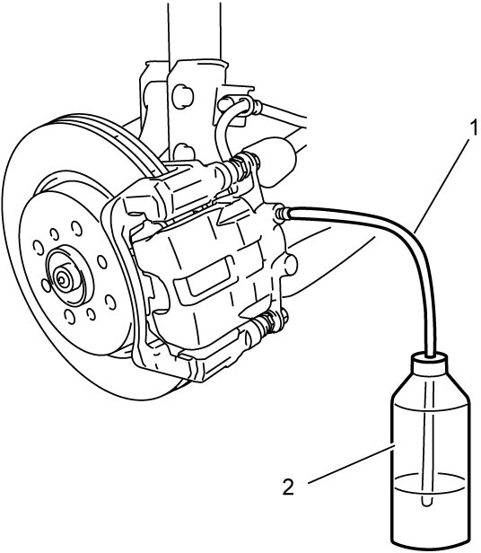

4A
| Air Bleeding of Brake System |
NOTICE:
•Using improper or contaminated brake fluid can cause brake system failure. Using shock absorber fluid or any other fluid that contains mineral oil for the brake fluid will cause the rubber parts in the brake hydraulic system to swell or distort. If water is mixed in the brake fluid, the boiling point will be lowered.
•If ABS or ESP® depressurization check is performed when air is trapped in brake line, air may be taken in hydraulic unit. To prevent this, bleed brake system before performing hydraulic unit operation check.
—Use only the specified brake fluid from a sealed container.
—Do not use a container that has been used for a mineral oil or is wet with water for refilling the brake system.
—Keep all fluid containers capped to prevent contamination and entry of moisture.
•Brake fluid is extremely damaging to painted surfaces. If brake fluid contacts painted surfaces, immediately wipe it off and flush the surfaces with water thoroughly.—Do not use a container that has been used for a mineral oil or is wet with water for refilling the brake system.
—Keep all fluid containers capped to prevent contamination and entry of moisture.
•If ABS or ESP® depressurization check is performed when air is trapped in brake line, air may be taken in hydraulic unit. To prevent this, bleed brake system before performing hydraulic unit operation check.
Hydraulic brake system must be bled whenever air enters the system.
As the system is of a diagonal split configuration, if pipe or hose is disconnected from one brake, the line concerned must be bled not only at the end of that brake but also at the end of the diagonally opposite brake.
If any joint on master cylinder or any intermediate joint between master cylinder and a brake is disconnected, then the system must be bled at all four brakes.
NOTE:
Perform bleeding operation starting from the brake farthest from brake master cylinder and then at the brake on the same brake line. Do the same on the other brake line.
 "Expand image")
| [A]: | LHD | 2. | Front left brake caliper |
| [B]: | RHD | 3. | Rear right brake caliper |
| [a]: | Vehicle forward | 4. | Rear left brake caliper |
| 1. | Front right brake caliper |
1)Fill brake master cylinder reservoir with new brake fluid and keep the reservoir at least one-half full of fluid during bleeding operation.

Brake fluid specification
Refer to reservoir cap (1) of brake master cylinder or Owner’s Manual.
 "Expand image")
2)Remove bleeder plug cap. Attach a vinyl tube (1) to bleeder plug, and insert the other end into container (2).

 "Expand image")
3)Depress brake pedal several times, and then while holding it depressed, loosen bleeder plug about one-third to one-half a turn.
4)When fluid pressure in cylinder is almost completely released, retighten bleeder plug.
5)Repeat this operation until air is completely removed from hydraulic line.
 "Expand image")
6)When air bubbles disappear from fluid flowing into container, depress and hold brake pedal and tighten bleeder plug.
•Front: 
•Rear:
•Rear:
 "Expand image")
7)Attach bleeder plug cap.
8)After completing bleeding operation, apply fluid pressure to brake lines and check for leakage.
9)Replenish reservoir with new fluid up to specified level.
10)Check brake pedal stroke. If the stroke is so large, repeat entire procedure of air bleeding.